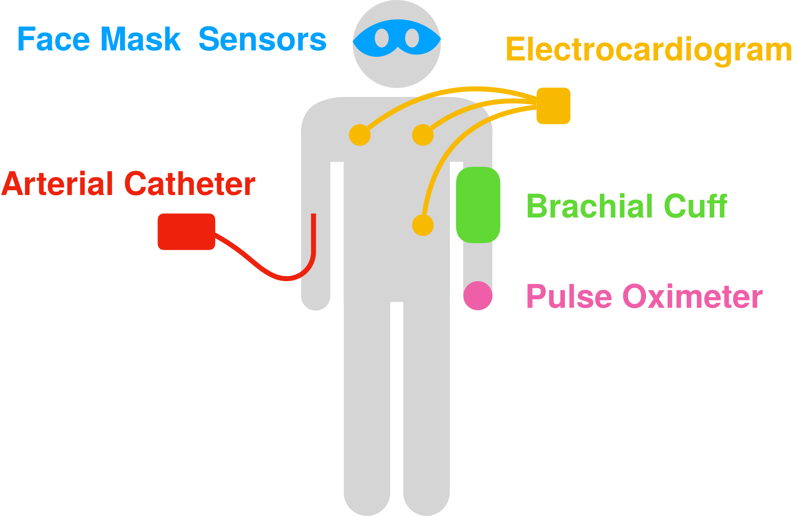

Blood pressure can drop to dangerously low levels during anesthetized surgeries, motivating the need for accurate and continuous measurmeent of blood pressure. However, brachial cuffs provide periodic and error-prone readings. I am currently leading an effort to implement a face-worn sensor array to measure blood pressure non-invasively and continuously during anesthetized surgeries. After designing and fabricating the device, I will conduct a validation study by obtaining synchronized recordings from my device alongside the vital signs from existing surgical patient monitors. I am working closely with a clinical collaborator from UW Medicine, as well as mentoring two undergraduate students on this project.
Physical inactivity is the fourth leading risk factor for death worldwide, and yet eighty percent of US adults do not meet national exercise recommendations. In collaboration with the Sports Institute at UW Medicine, the UbiComp Lab is designing a smartphone application that can be prescribed to patients at UWMC clinics. We believe that physical activity is a vital sign that should be monitored closely alongside blood pressure and BMI. Our application will assist in goal setting, provide context-aware nudges, and connect exercise data with health care providers. To extend the quantification of activity beyond step counting, we are evaluating the use of doppler ultrasound to sense a wide range of physical activities. I am mentoring two high school interns who are assisting with data collection and analysis.
Poster
I led a project with the goal of detecting osteopososis using sensors in a smartphone. Osteoporosis is characterized by a decrease in bone mass density (BMD) causing millions of fractures annually. The clinical standard for measuring BMD requires radiation, access to expensive equipment, and trained staff, motivating the need for a low-cost and ubiquitous alternative. Towards this goal, I prototyped OsteoApp, a smartphone application that aims to infer bone mass density by measuring resonant frequency in a human tibia using the built-in accelerometer. I tested this system alongside a low-noice accelerometer data collection system I built with patients from local retirement communities as well as a control group at UW, and performed signal processing and data analysis in Python. I presented this work at UW's 2019 Undergraduate Research Symposium.
PosterI implemented a smartphone application for real-time pulse transit time (PTT) measurement using solely smartphone hardware. PTT is the time differential between the heartbeat and the arrival of the pulse pressure wave at the fingertip. Since PTT is inversely correlated with blood pressure, this provides an opportunity to perform noninvasive and continuous monitoring of blood pressure using commodity devices. Prior work from my lab proposed the use of smartphones to measure PTT; I built upon this work by implementing the sensing, signal processing, and visualization code for the Android smartphone platform. I presented this work at an annual technology CEO summit held at the Paul G. Allen School, the school’s 2018 Industry Affiliates Research Day, and UW's 2018 Undergraduate Research Symposium.
PosterI contributed to a project evaluating the feasibility of testing for sleep apnea using smartphone hardware. When a patient with obstructive sleep apnea stops breathing during sleep, the sympathetic nervous system becomes activated in response to the interrupted respiration; this sympathetic drive persists during wakefulness. Although the nervous deregulation is difficult to measure directly, it is believed to manifest in discernible changes to the coordination between cardiac and respiratory systems. This project aimed to detect subtle changes in this cardiac signature to screen for sleep apnea. I assisted with data collection at the Harborview Sleep Medicine Center by recording cardiac and respiratory signals while participants executed a series of breathing maneuvers. I processed and analyzed the data using MATLAB to extract timing features.

Testing for drug resistant strains of HIV is necessary for clinicians to effectively treat patients; however, the standard genotyping assays like Sanger sequencing are infeasible in resource-limited settings where drug resistant HIV is increasingly circulating. OLA-Simple is a low-cost paper-based lateral flow strip test and chemistry kit that can be used to amplify and detect low amounts of drug-resistant strains of HIV. Five common drug-resistant mutations can be visualized as colored bands on a paper strip; however, human error limited the sensitivity and specificity of this test. I built computer vision code to read flatbed scanner images, isolate paper strips, and measure the band intensities to interpret the test results. I used this code to generate data for major tables and figures in the paper for this project, and performed an evaluation with training and testing datasets that demonstrated over 99% accuracy. I presented my my work to collaborating clinicians, professors, and students at regular project meetings.
Paper WebsiteI worked with a biologist to translate written synthetic biology protocols into code for the Aquarium lab automation system. This work supported a multi-institutional collaboration aiming to examine neural net regeneration in Hydra, small freshwater Cnidaria organisms with the ability to regenerate from disaggregated cell masses. I formalized and quantified experimental workflows for both husbandry and transgenics (i.e. genetic modification) protocols, creating appropriate algorithms and data management schemes to perform high-throughput experiments. I also supported experimentation with different experimental parameters to optimize DNA transfection efficiency.